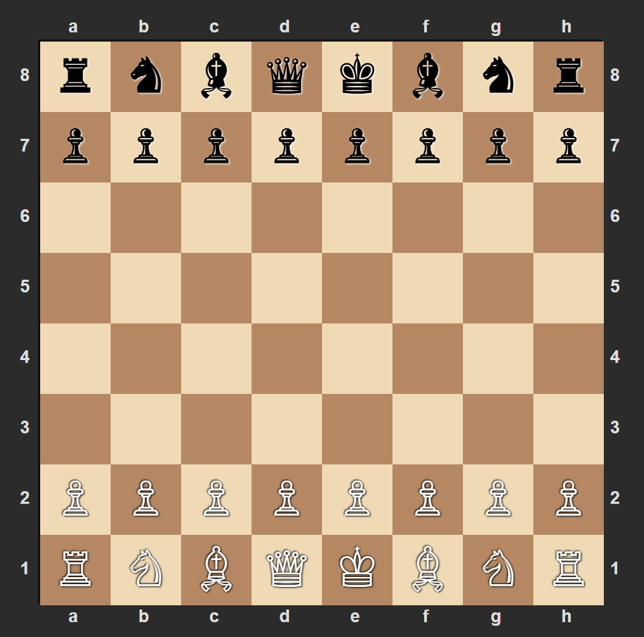
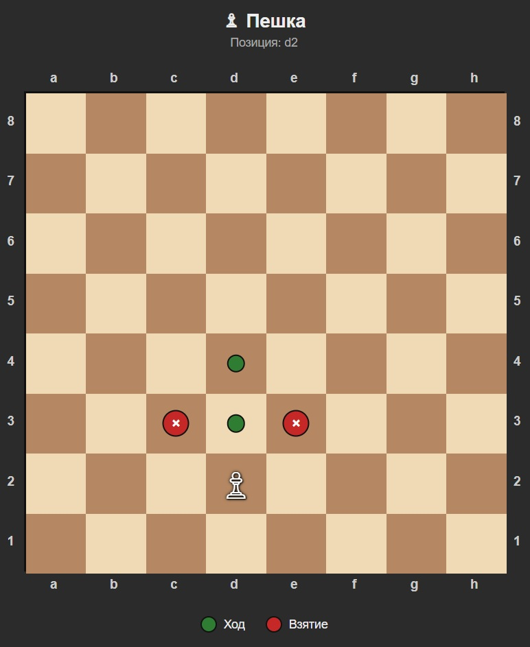
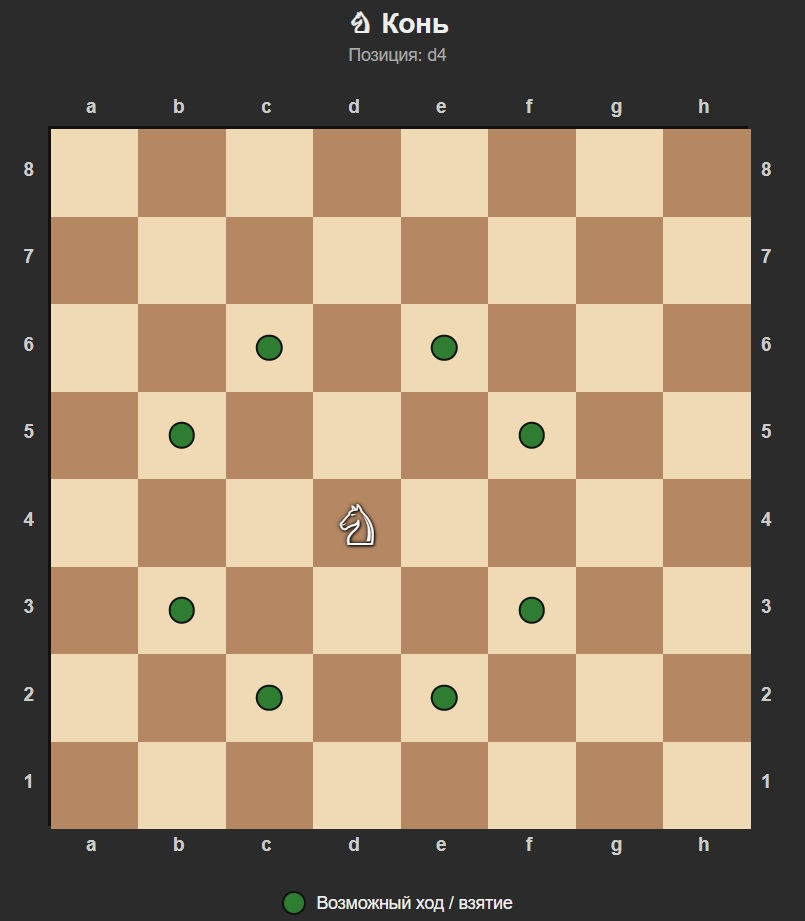
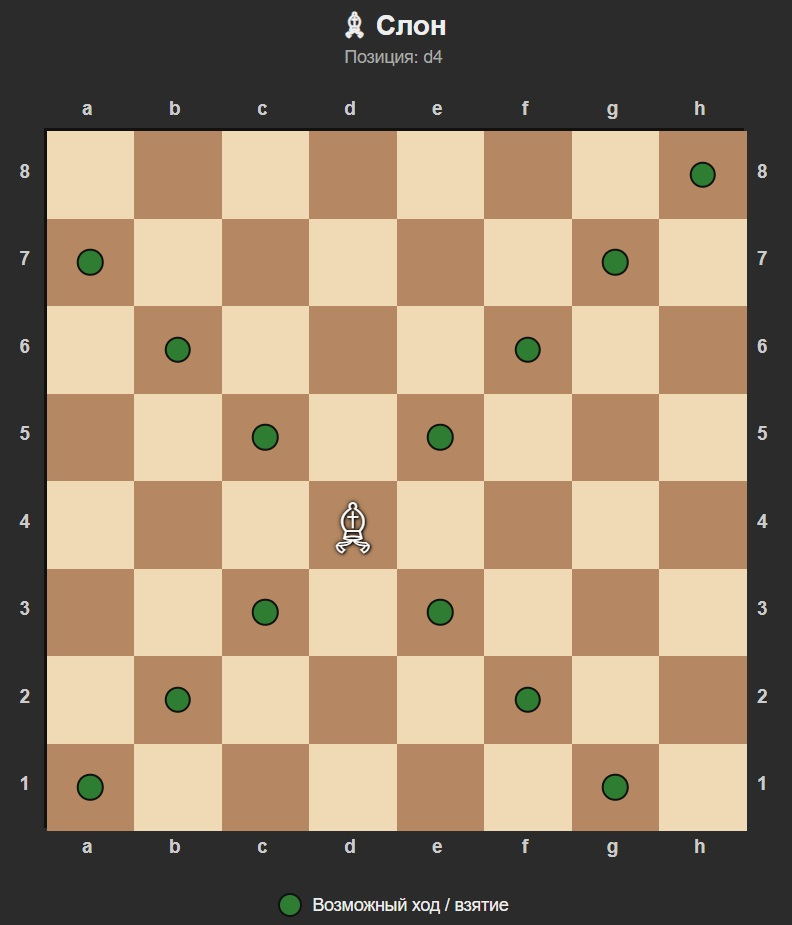
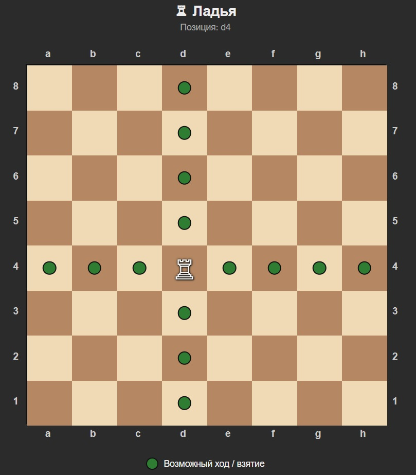
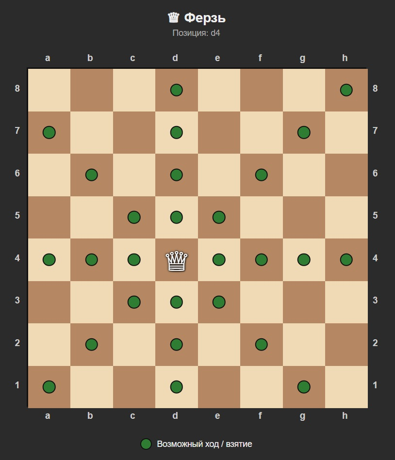
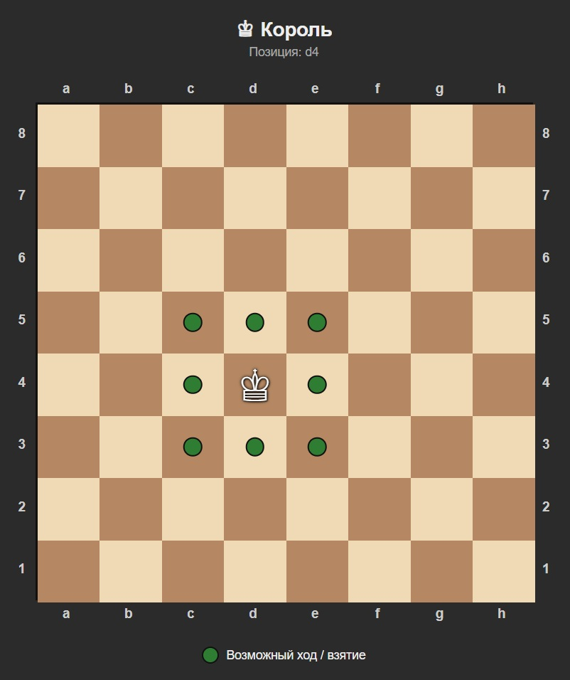

Правила шахмат: полный гид для начинающих
Всё, что нужно знать, чтобы сесть за доску и сыграть первую партию.
Введение
Шахматы кажутся сложными только на первый взгляд. На самом деле правил не так много: доска, шесть видов фигур, несколько особых ходов — и цель, к которой стремится каждый игрок. Разобраться в них можно за один вечер. Эта страница — пошаговый гид: от расстановки фигур до мата. Если ты никогда не играл — начни отсюда.
Раздел 1. Доска и расстановка
Шахматная доска — это квадрат 8×8, то есть 64 клетки. Клетки окрашены в два цвета: светлый и тёмный. Они чередуются по горизонтали и вертикали. Важное правило: правая нижняя клетка всегда должна быть светлой. Это легко запомнить фразой «белое поле справа».
Ряды клеток по горизонтали называются горизонталями, по вертикали — вертикалями, а диагонали — просто диагоналями. Горизонтали обозначаются цифрами от 1 до 8 (снизу вверх), вертикали — латинскими буквами от a до h (слева направо). Так у каждой клетки есть своё имя: например, e4 или d5.

Как расставить фигуры
Перед началом партии фигуры расставляются одинаково у обеих сторон:
- Ладьи стоят по углам.
- Кони — рядом с ладьями.
- Слоны — рядом с конями.
- Ферзь — на клетке своего цвета: белый ферзь на белой, чёрный на чёрной.
- Король — на оставшейся центральной клетке.
- Пешки — во втором ряду, все восемь.
Белые всегда ходят первыми. Это даёт небольшое преимущество — именно поэтому в серьёзных турнирах цвет разыгрывают жребием.
Раздел 2. Как ходят фигуры
Пешка
Самая слабая фигура, но именно пешки создают структуру партии. Ходит только вперёд на одну клетку. С первого хода может пойти на две клетки. Бьёт по диагонали — вперёд на одну клетку. Это важно: пешка ходит и бьёт по-разному. Дойдя до последней горизонтали, превращается в любую фигуру, кроме короля.
Конь
Единственная фигура, которая умеет перепрыгивать через другие. Ходит буквой «Г»: две клетки в одном направлении и одна — в перпендикулярном. Может перепрыгивать через фигуры — свои и чужие. «Конь на краю — позор для всадника»: на краю доски у коня меньше ходов.
Слон
Ходит по диагонали на любое расстояние. Не может перепрыгивать через фигуры. У каждого слона — свой цвет: один ходит только по светлым клеткам, другой — только по тёмным. Поэтому слоны никогда не встречаются друг с другом.
Ладья
Ходит по вертикали и горизонтали на любое расстояние. Не может перепрыгивать через фигуры. В эндшпиле ладья — одна из сильнейших фигур.
Ферзь
Самая сильная фигура на доске. Ходит как ладья и слон вместе: по вертикали, горизонтали и диагонали на любое расстояние.
Король
Главная фигура. Ходит на одну клетку в любом направлении. Короля нельзя потерять — если ему угрожают, нужно немедленно реагировать. Проигрыш партии — это мат королю, а не его потеря.






Раздел 3. Особые ходы
Рокировка
Единственный ход, при котором двигаются две фигуры одновременно: король и ладья. Король перемещается на две клетки в сторону ладьи, а ладья перескакивает через него и встаёт рядом. Рокировка бывает двух видов: короткая (с ладьёй h) и длинная (с ладьёй a).
Условия для рокировки:
- Король и ладья ещё не двигались.
- Между ними нет других фигур.
- Король не под шахом, и клетки, через которые он проходит, не атакованы.
Взятие на проходе
Особый ход пешки. Если пешка соперника прошла через клетку, которую атакует твоя пешка (то есть сходила сразу на две клетки), ты можешь побить её так, как будто она прошла только одну. Но только сразу после этого хода — потом право теряется.
Превращение пешки
Если пешка дошла до последней горизонтали, она немедленно превращается в любую фигуру своего цвета, кроме короля. Обычно выбирают ферзя — это самый выгодный вариант. Теоретически можно превратить пешку во второго ферзя, ладью, слона или коня.
Раздел 4. Цель игры: шах и мат
Шах
Это нападение на короля. Если король под шахом, игрок обязан немедленно от него избавиться. Есть три способа: уйти королём на безопасную клетку, закрыть линию атаки своей фигурой или побить атакующую фигуру.
Мат
Это шах, от которого нет спасения. Король атакован, и ни один из трёх способов не работает. Партия на этом заканчивается, и игрок, поставивший мат, побеждает.
Пат и другие виды ничьей
Пат — ситуация, когда у игрока нет ни одного возможного хода, но король не под шахом. Это не победа и не поражение, а ничья. Пат — распространённая ловушка в эндшпиле: имея огромное преимущество, можно случайно загнать соперника в пат и упустить победу.
Другие виды ничьей: договорная ничья, троекратное повторение позиции, правило 50 ходов, недостаток материала для мата.
Раздел 5. Шахматная нотация
Нотация — это система записи ходов. Она позволяет записать партию так, чтобы её мог воспроизвести любой игрок в мире. Каждый ход записывается так: сначала фигура, потом клетка.
- K — король (King)
- Q — ферзь (Queen)
- R — ладья (Rook)
- B — слон (Bishop)
- N — конь (Knight)
- Пешка — без буквы, только клетка.
Примеры:
- e4 — пешка пошла на e4.
- Nf3 — конь пошёл на f3.
- Bxc6 — слон бьёт фигуру на c6 (x — взятие).
- O-O — короткая рокировка.
- e8=Q — пешка дошла до e8 и превратилась в ферзя.
- + — шах, # — мат.
Интересные факты о правилах
- Правая нижняя клетка всегда должна быть светлой — это первое, что проверяют перед партией.
- Пешка — единственная фигура, которая ходит и бьёт по-разному.
- Конь — единственная фигура, которая может перепрыгивать через другие.
- Слоны никогда не встречаются: один ходит только по белым клеткам, другой — только по чёрным.
Что дальше?
📖 История шахмат — от чатуранги до наших дней
👤 Великие шахматисты — биографии чемпионов мира
📖 Шахматный словарь — термины и понятия
🔗 Полезные ресурсы — где играть и учиться